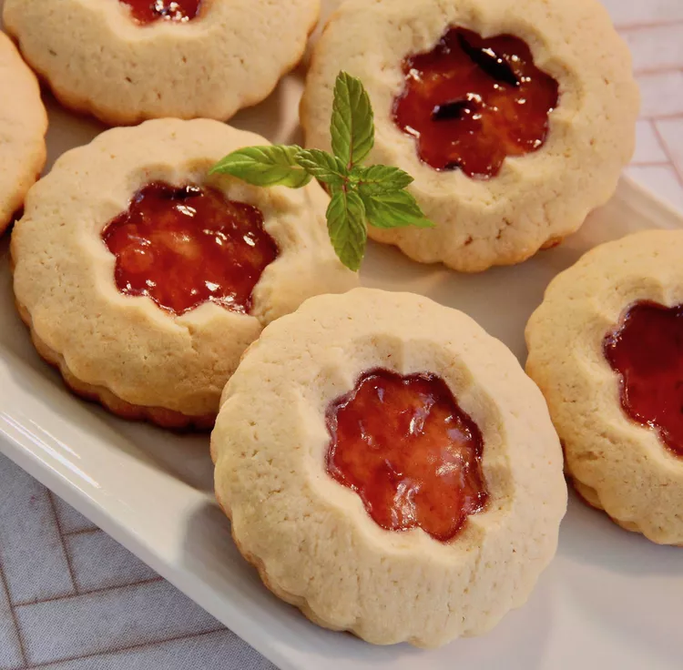

Plum Jam Cookies

Description
MAny flavor of jam can be used in these festive holiday sandwich cookies.
Ingredients
- 8 ounces butter
- 1 cup packed brown sugar
- 1 egg
- 1 teaspoon baking soda
- ¼ cup water
- 3 cups all-purpose flour
- 1 pinch salt
- 1 teaspoon baking powder
- 1 cup plum preserves
Steps
- Preheat oven to 375 degrees F( 190 degrees C).
- CIn a large bowl, cream together the butter and brown sugar. Beat in the egg and water. Sift together the flour, baking powder, and salt; stir into the butter mixture until well blended.
- On a lightly floured surface, roll out the dough to 1/4 inch thickness. Cut with a 2 inch round cookie cutter. Put half of the cookies onto a cookie sheet and spread 1/2 of a teaspoon of plum jam in the center of each one. With a thimble, or small cookie cutter , cut the center out of the remaining cookies. Place these on top of the jam topped cookies to make sandwiches. Press together. Bake cookies for 10 minutes then remove to a rack to cool.
Home